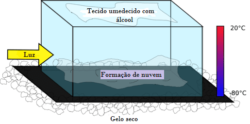

Ou câmara de Wilson, foi criado por Charles Thomson Rees Wilson, em 1912,
com intuito de visualizar rastros de partículas e radiações ionizantes
( Sendo que radiação ionizante é toda forma de radiação que carrega energia
suficiente para arrancar os elétrons dos átomos, porém pode ser perigosa ao organismo).

A Câmara de nuvens seria um método de tornar visível o caminho de partículas
e radiações ionizantes utilizando condensação de vapor. Ela é produzida em uma cuba de vidro, com gelo seco embaixo dela a uma temperatura de -70 ou - 80 graus, com um feltro embebido de álcool isopropílico, e uma plataforma de metal
Ela é produzida em uma cuba de vidro, com gelo seco embaixo dela a uma temperatura
de -70 ou - 80 graus, com um feltro embebido de álcool isopropílico, e uma plataforma
de metal abaixo da cuba também com álcool isopropílico, sendo necessária uma luz, para
termos visibilidade das partículas.